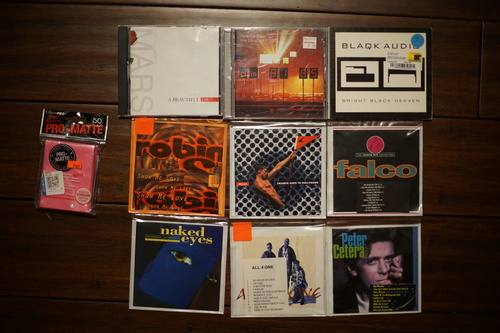

I swear I am the busiest NEET alive! How am I so busy!!!!
Ryan and I made the mad dash back to the distant storage unit and retrieved a bunch of things. One of these things is my Cintiq 16, which I did not bring previously because my laptop was incapable of doing much of anything.
I spent a few more hours optimizing my Linux Drawing Experience, as always, and now it's mostly back up and running, thanks to help from Linus.

It was a very lovely spring day, so I took a walk around The Grounds with my Seikanon 28mm. I have NOT been able to get the aperture to stop down no matter what I try. This lens also feels cheaper than my Canon brand lenses. There doesn't seem to be any damage on it so I'm surprised it's broken.
28mm f/2.8 is very similar to the 26mm f/1.8 that my iPhone XS claims it has. I took some comparison shots. I tried to position the sensors in the same place for each set. iPhone camera on right.
I'm not sure there's much of an advantage of using this lens over using my phone, but the DOF is much shallower with close ups.
Haul time!!! I got really lucky in the CD department the other day.
Ryan scouted this as something up my alley, but I had no idea what it sounded like. Linus said it was a good album so I trusted his judgement. Ryan says Jared Leto was the guy getting his a*s destroyed in Patrick Bateman's apartment so that's a good start.
I love AFI. I love electrotunes. This is perfect!!!
I actually intended to buy "Robyn - Show Me Love", but this is a good song too. There was another CD shoved in the sleeve as well.
Ryan needed I Swear off this one
Ryan needed the OST for his favorite game.